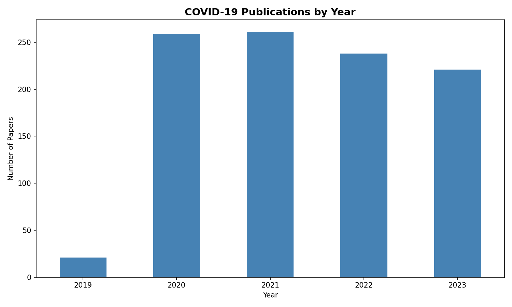
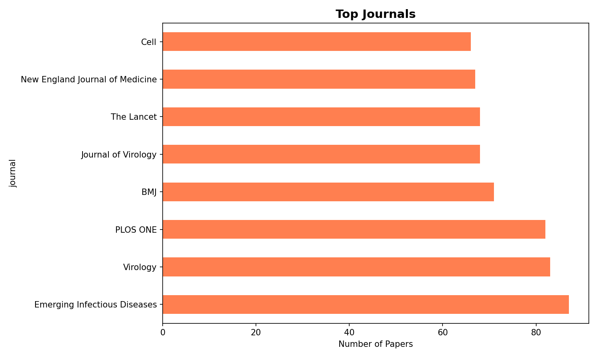
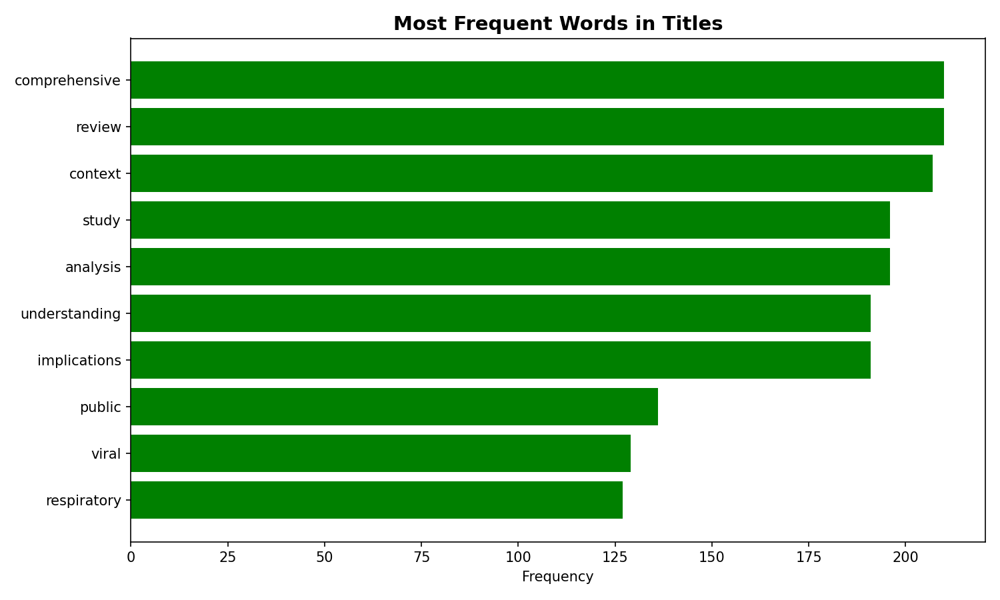
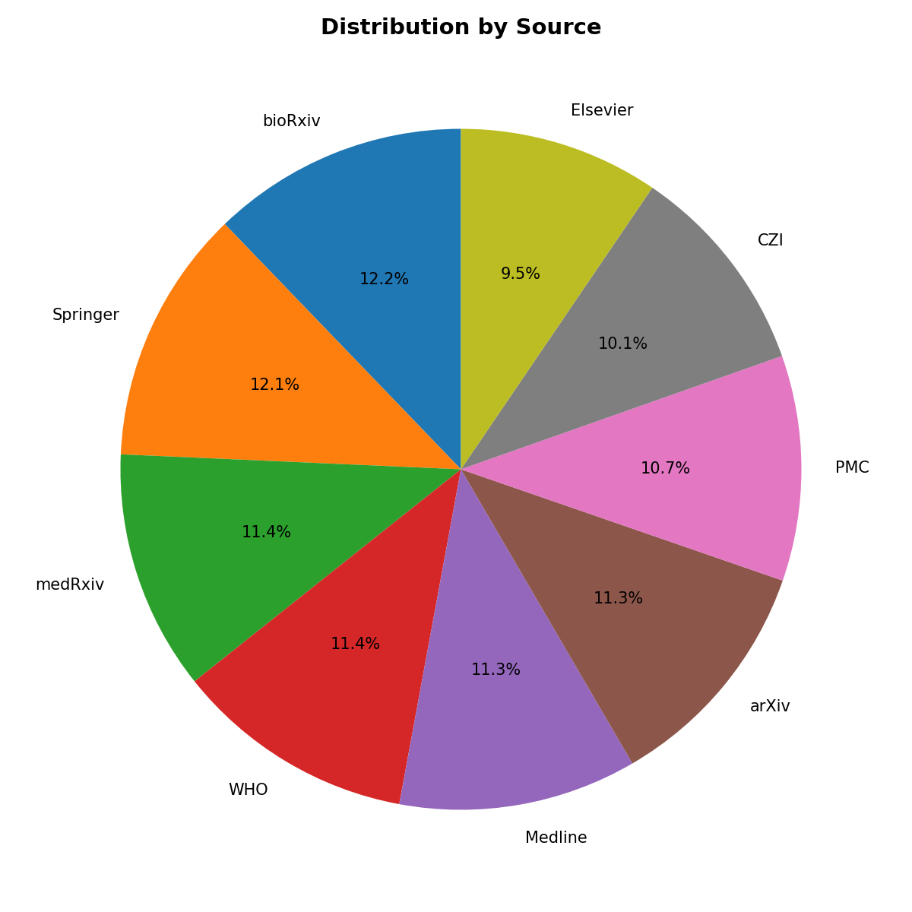

📊 COVID-19 Research Analysis
Analysis of CORD-19 Research Dataset
📈 Key Findings
- Peak Publication Year: 2020-2021 saw the highest number of COVID-19 research papers (260+ each year)
- Top Journal: Emerging Infectious Diseases led with the most publications
- Most Common Terms: "comprehensive", "review", "context", "study", and "analysis"
- Source Distribution: Research papers were fairly distributed across bioRxiv (12.2%), Springer (12.1%), and other major sources
- Research Decline: Publications decreased in 2022-2023 as the pandemic progressed
📊 Publications Over Time

Research output peaked during 2020-2021 at the height of the pandemic
📰 Top Publishing Journals

Leading medical and virology journals dominated COVID-19 research publication
🔤 Most Frequent Words in Titles

Key research themes focused on comprehensive reviews and contextual analysis
📊 Distribution by Source

Research was distributed across multiple reputable sources and preprint servers